01
米麹の天然酵母 —— 生地をふくらませる酵母は、米麹から起こしたものを使っております。
国産の米粉 —— 米粉の食パンは、国産の米粉だけで焼いております。
米油 —— 生地に使う油は、米油です。
02
生地は冷凍も作り置きもいたしません。その日に仕込んだ生地だけを、その日のうちに焼いております。二種類の酵母と、配合の違う八種類の生地を使い分けて、一つひとつの味わいを大切に焼き上げております。
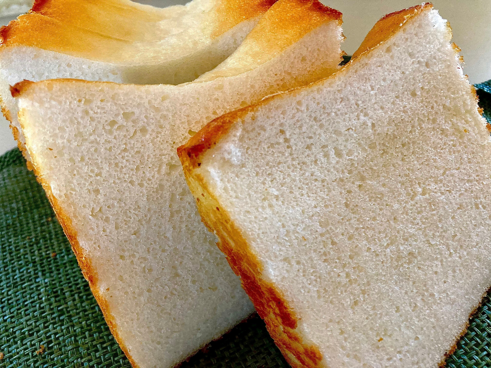
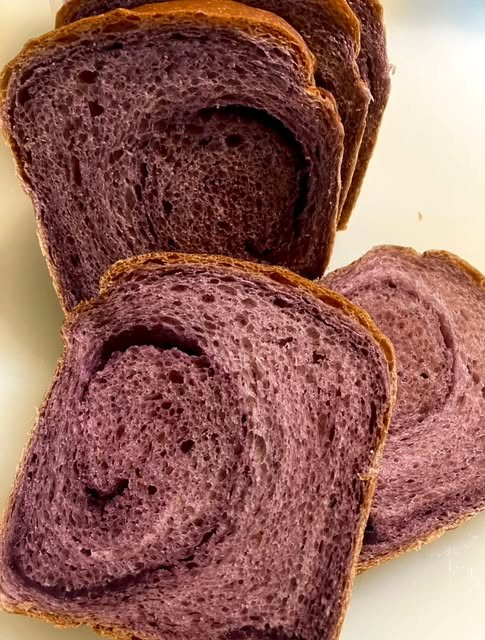
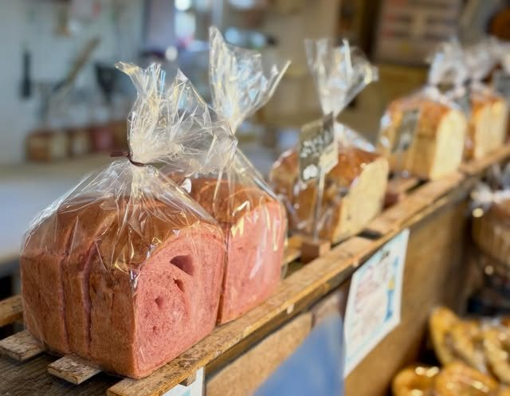
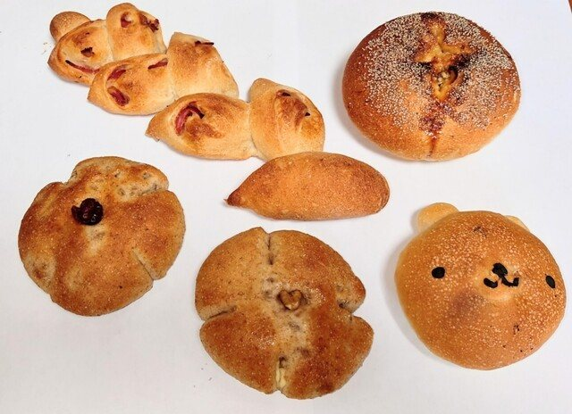
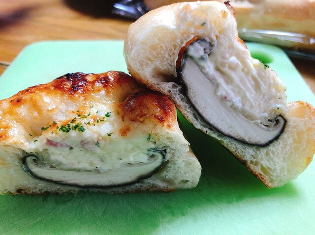
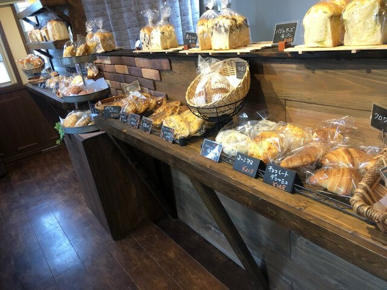
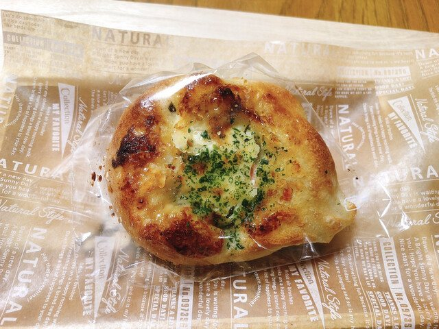
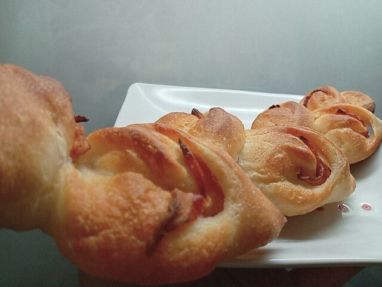
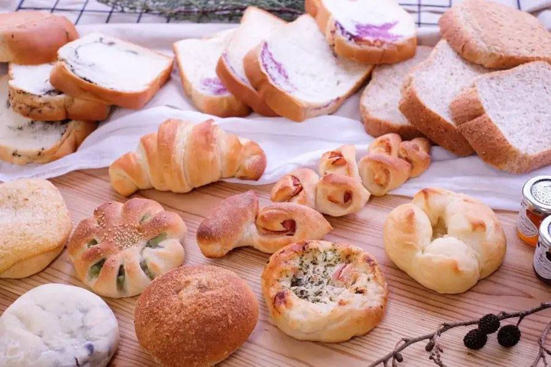
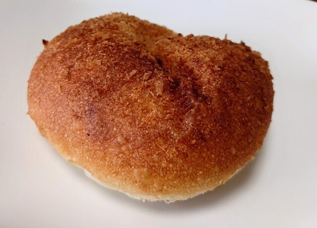
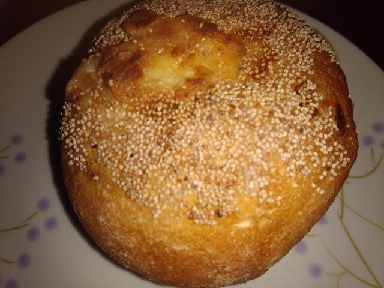
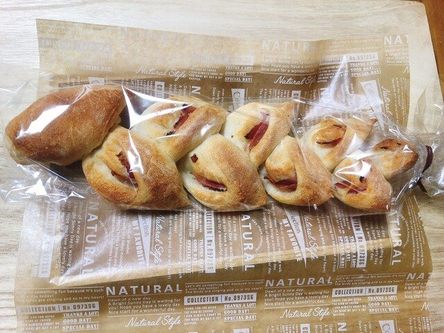
03
朝六時半に店を開けております。お出かけの前にお立ち寄りいただき、その日の朝ごはんにお持ち帰りいただけます。品によっては、午前のうちに売り切れてしまうことがございます。
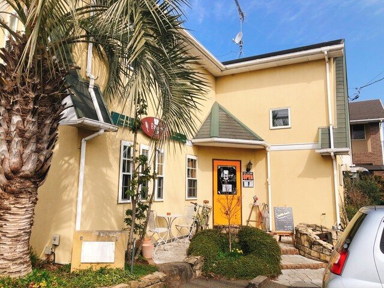
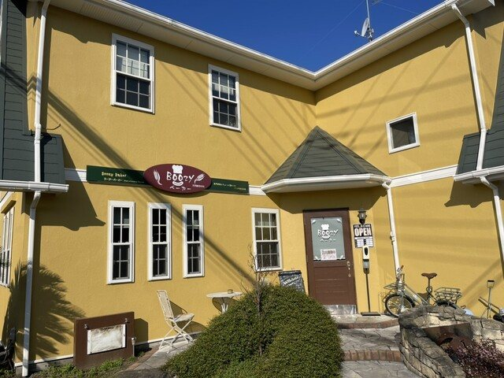
九時半から十時までの三十分は、清掃のため一度店を閉めております。
04
季節ごとに、決まって戻ってくるパンがございます。
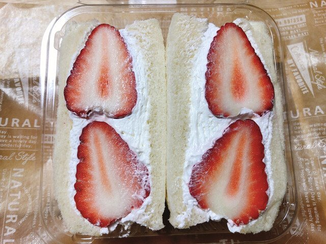
十一月から五月ごろまでお作りしております。市内の農園の紅ほっぺを、生クリームではさんでおります。
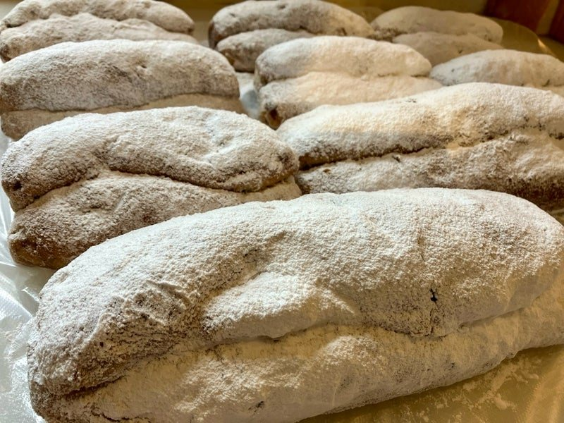
冬にお作りしております。バターと卵を使う、はじめた頃のつくりに戻し、具だくさんに仕込んでおります。
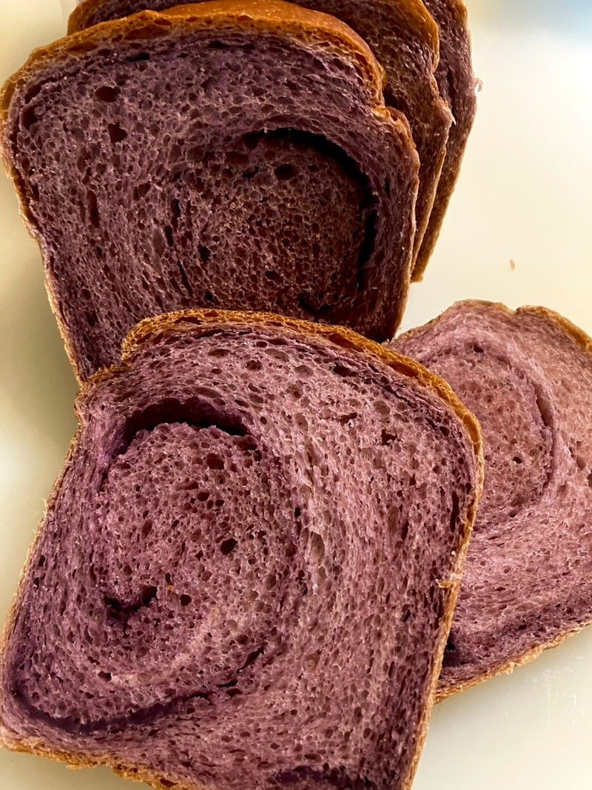
毎日一本、三斤だけ焼いております。生地もブルーベリー、中の餡は当店で味付けしたものです。材料がなくなり次第、終了とさせていただきます。
06
食パンなどのご予約を承っております。お電話にてお申し付けください。いちごの食パンのような数の少ない品は、前日までにご連絡いただけますと、確実にお取り置きできます。
オンラインショップと rebake から、冷凍便でのお取り寄せも承っております。
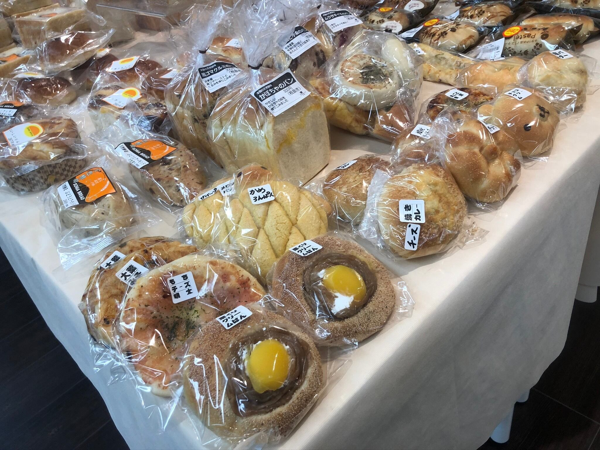
07
住まいの半分が、店になっております。お持ち帰りのお店で、店内にお召し上がりのお席はございません。
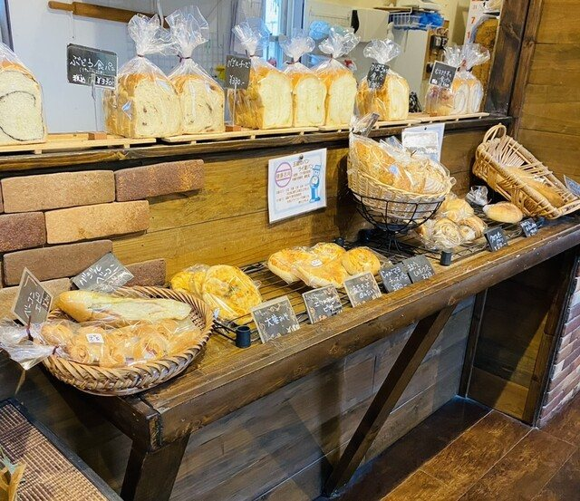
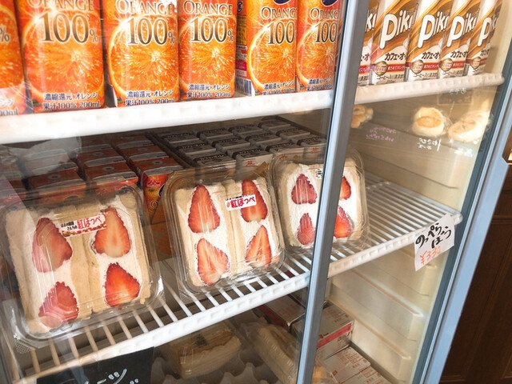
08
県道250号沿いにございます。月に一度、連休をいただくことがございます。お休みはブログとInstagramでお知らせしております。
| 営業 | 6:30〜9:30 |
|---|---|
| 9:30–10:00は清掃のため一度閉めます | |
| 10:00〜17:30 | |
| 定休日 | 月曜日 |
| 駐車場 | 店の前に四台 |
| お支払い | 現金・カード・電子マネー・QRコード |
| 住所 | 〒306-0226 茨城県古河市女沼391-7 |
|---|---|
| 電話 | 0280-23-5848 |
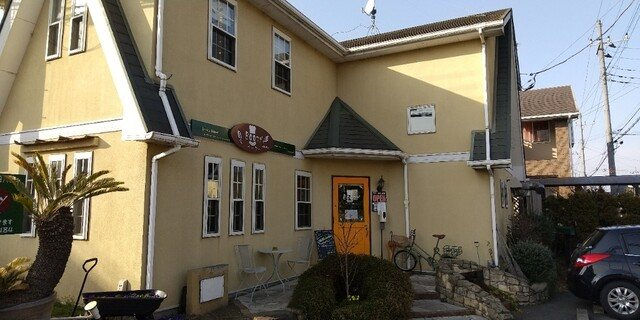
古河・女沼で、今日も焼いてお待ちしております。
0280-23-5848｜お電話でご予約